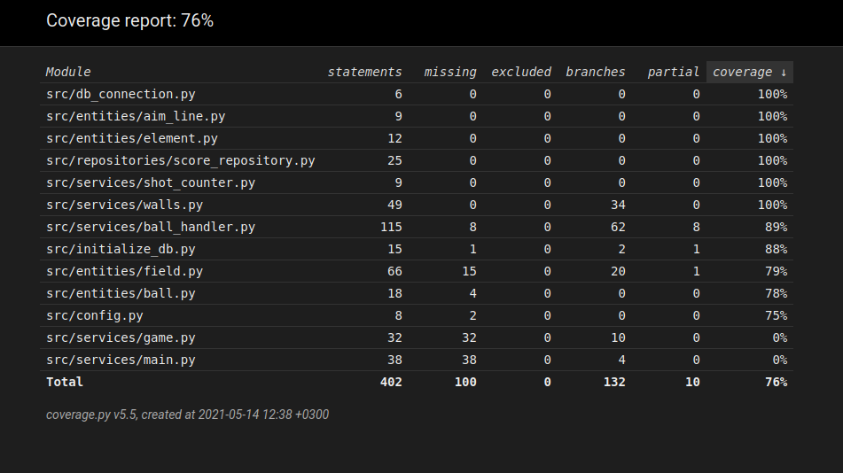

Testausdokumentti
Peliä on testattu yksikkö- ja integraatiotesteillä unittestiä käyttäen.
Yksikkö- ja integraatiotestaus
Sovelluslogiikka
Pelin komponenttien luomisesta vastaavia Ball ja Element -luokkia testataan omilla testiluokillaan. BallTest -testiluokka testaa, että pallo liikkuu oikein. ElementTest -testiluokassa taas testaataan elementtien kuvatiedostojen oikea polku.
Kentän luomisesta vastaavaa Field -luokkaa testataan omassa FieldTest -testiluokassaan. Luokasta testataan, luoko se oikean määrän kutakin kentän elementtiä sekä asettaako se itselleen oikeat mittasuhteet.
Ainoat visuaaliset testit koskevat AimLine -luokkaa. Sen testiluokassa TestAimLine testataan, piirtyykö tähtäysviiva oikeansuuntaisesti kentälle.
Lyöntien laskemisesta vastaava luokka ShotCounter testataan omassa TestShotCounter -testiluokassa. Testauksen kohteena ovat laskurin kasvaminen ja nollaus.
Kentältä seinien paikallistamisesta vastaavalle Walls -luokalle on määritelty testit TestWalls -testiluokassa. Testiluokalle annetaan kuvitteellisen kentän sisältö ja testataan, palauttaako luokan get_contact_points() -metodi seinien sijainnit oikein.
Monia erikseen testattuja komponentteja käyttävä BallHandler -luokka testataan TestBallHandler -testiluokassa, jossa Ball ja Field -luokille luodaan testiversiot MockBall ja MockField. Testiluokka testaa lyönnin vaikutukset ja pallon liikkumista kentällä. Testataan, että lyöntiä ei tapahdu, kun se ei ole sallittua ja että pallo pysähtyy haluttuun kohtaan. Testataan myös pallon seiniin osumisen vaikutukset.
Repositorio-luokka
Tietojen pysyväistallennuksesta vastaavaa ScoreRepository -luokkaa testataan omalla TestScoreRepository -testiluokalla. Testeissä käytetään oma testitietokantaa, joka on määritelty .env.test-tiedostossa. Luokan kaikkia metodeita testataan erikseen.
Testauskattavuus
Testien haarautumakattavuus on 76%.

Testien ulkopuolelle on jäänyt Game -luokka, joka ainoastaan pyörittää pygamen tapahtumia sekä main -funktio, joka alustaa pygamen peliä varten sekä hoitaa pelin päättymisen jälkeiset tapahtumat.
Järjestelmätestaus
Sovellusta on testattu järjestelmätasolla manuaalisesti.
Asennus ja konfigurointi
Pelin käyttöä on testattu sekä omalla koneella, jossa on käytössä Ubuntu 20.04 että yliopiston virtuaalikoneella asentamalla se käyttöohjeen kuvaamalla tavalla.
Pelin toimintaa on testattu erilaisilla syötteillä ja valinnoilla valikossa sekä erilaisilla lyöntikohdilla ja lyöntimäärillä pelissä. On myös testattu erilaisilla tietokantojen nimillä.
Sovelluksen kaatavia bugeja ei ole löytynyt, mutta itse pelissä pallon liikeestä löytyy useampia poikkeavuuksia odotettuun verrattuna. Nämä ovat kuitenkin suhteellisen harvinaisia, eivätkä estä pelin pelaamista millään tapaa.